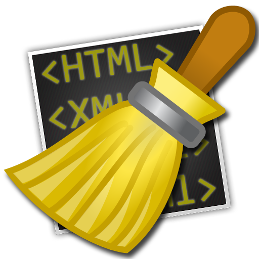

Tidy’s Document Window
The document window is how you will interact with Tidy in order to clean and repair your HTML documents.
It consists of several key areas:
The document window is how you will interact with Tidy in order to clean and repair your HTML documents.
It consists of several key areas: